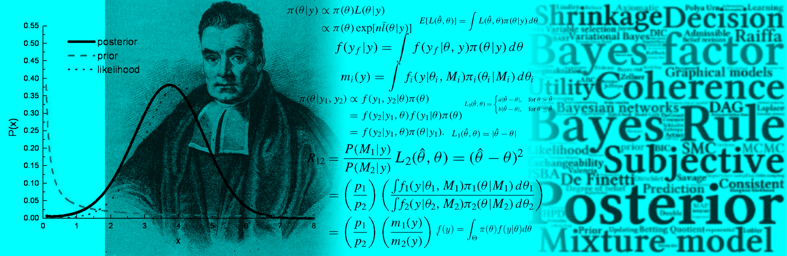

Introduction to Bayesian Data Modeling
A GUIded toolkit using R
2025-02-16
Introduction
 Since the late 90s, Bayesian inference has gained significant popularity among researchers due to the computational revolution and the availability of algorithms to solve complex integrals. However, many researchers, students, and practitioners still lack a deep understanding and practical application of this inferential approach. The primary reason for this is the requirement for strong programming skills.
Introduction to Bayesian Data Modeling: A GUIded Toolkit using R mainly targets those who want to apply Bayesian inference with a solid conceptual and formal understanding but may not have the time to develop programming skills.
Thus, this book provides a graphical user interface (GUI) for performing Bayesian regression in a user-friendly environment. It also offers the basic theory and its code implementation using R software (R Core Team, 2021), along with applications that highlight the potential of Bayesian inference.
Additionally, the book includes theoretical and computational exercises for those interested in developing more complex models. In particular, the first part presents step-by-step mathematical proofs of basic models, serving as the foundation for deriving key mathematical results in the more complex models covered in the second and third parts.
Our GUI is based on an interactive web application using shiny (Chang et al., 2018), along with several packages in R. Users can estimate univariate, multivariate, time series, longitudinal/panel data, and Bayesian model averaging models using our GUI.
In addition, it provides basic summaries, as well as formal and graphical diagnostics of the posterior chains. Our GUI can be run on any operating system and is freely available at GitHub.
Users can access simulated and real datasets in the folders DataSim and DataApp, respectively. The DataSim folder also includes the files used to simulate different processes, providing access to population parameters. As a result, these files serve as a pedagogical tool for demonstrating various statistical properties. The DataApp folder contains the datasets used in our applications, which users are encouraged to use as templates for structuring their own datasets.
This book is divided into three parts:
- Part One (Chapters 1–4) covers theoretical concepts, mathematical foundations, programming, and simulation.
- Part Two (Chapters 5–10) focuses on regression applications, with an emphasis on computational methods for obtaining posterior draws at three levels of programming skills:
- No programming skills required (using our GUI).
- Intermediate skills (using specialized R packages for Bayesian inference).
- Advanced skills (coding posterior draws from scratch).
- No programming skills required (using our GUI).
- Part Three (Chapters 11–14) introduces advanced methods in Bayesian inference.
Some mathematical derivations are presented in detail in the first part of the book, while most proofs are omitted in the second and third parts. However, the mathematical steps covered in Part One can be applied to derive results in Parts Two and Three.
In the first part, Chapter 1 introduces fundamental concepts in Bayesian inference, starting with Bayes’ rule, its components, formal definitions, and basic examples. It then presents the basics of Bayesian inference within a decision-theoretic framework under uncertainty.
Chapter 2 discusses the conceptual differences between Bayesian and Frequentist statistical approaches, providing both a historical and philosophical perspective on Bayesian statistics and econometrics while highlighting contrasts with the Frequentist approach.
Chapter 3 introduces conjugate families in basic statistical models, solving them both analytically and computationally. Chapter 4 presents simulation-based methods, which are essential in modern Bayesian inference since most realistic models lack standard forms or analytical solutions.
In the second part, Chapter 5 introduces our graphical user interface (GUI). Univariate and multivariate regression models are covered in Chapters 6 and 7. Chapter 8 focuses on univariate and multivariate time series models, while Chapter 9 covers Bayesian longitudinal/panel data models. Chapter 10 introduces Bayesian model averaging.
The third part covers advanced topics:
- Chapter 11 explores semi-parametric and non-parametric models.
- Chapter 12 discusses causal inference.
- Chapter 13 covers Bayesian methods in machine learning.
- Chapter 14 describes approximation methods.
About Me
My name is Andrés Ramírez-Hassan, and I am an applied and theoretical econometrician working as a Distinguished Professor in the School of Finance, Economics, and Government at Universidad EAFIT (Medellín, Colombia). I hold a PhD in Statistical Science, a Master’s degree in Finance, a Master’s degree in Economics, and a Bachelor’s degree in Economics. I have been a research fellow at the Department of Econometrics and Business Statistics at Monash University and a visiting professor in the Department of Economics at the University of Melbourne and the University of Glasgow.
Since completing my PhD, my research has primarily focused on Bayesian econometrics, with applications in crime, finance, health, sports, and utilities. My work has been published (or is forthcoming) in highly regarded journals, including: International Journal of Forecasting, Journal of Applied Econometrics, Econometric Reviews, Journal of Computational and Graphical Statistics, The R Journal, Economic Modelling, Spatial Economic Analysis, Economic Inquiry, World Development, Journal of Sport Economics, Empirical Economics, Australian and New Zealand Journal of Statistics, Brazilian Journal of Probability and Statistics, among other prestigious international research outlets.
I founded BEsmarter — Bayesian Econometrics: simulations, models, and applications to research, teaching, and encoding with responsibility. This research group’s mission is to lead and excel in generating and disseminating Bayesian econometric knowledge through research, teaching, and software. Our vision is to advance worldwide econometric research, teaching, and applications based on the Bayesian framework, aiming to:
- Inspire new econometric ideas
- Create a user-friendly environment for Bayesian econometrics applications
- Transform classical econometric research, teaching, and applications
- Address critical social problems through scientific advancements
Contact
- Email: aramir21@gmail.com / aramir21@eafit.edu.co
- Website: http://www.besmarter-team.org
License
This book is licensed under the Creative Commons Attribution-NonCommercial-ShareAlike 4.0 International License.

This book is licensed under the Creative Commons Attribution-NonCommercial-ShareAlike 4.0 International License.